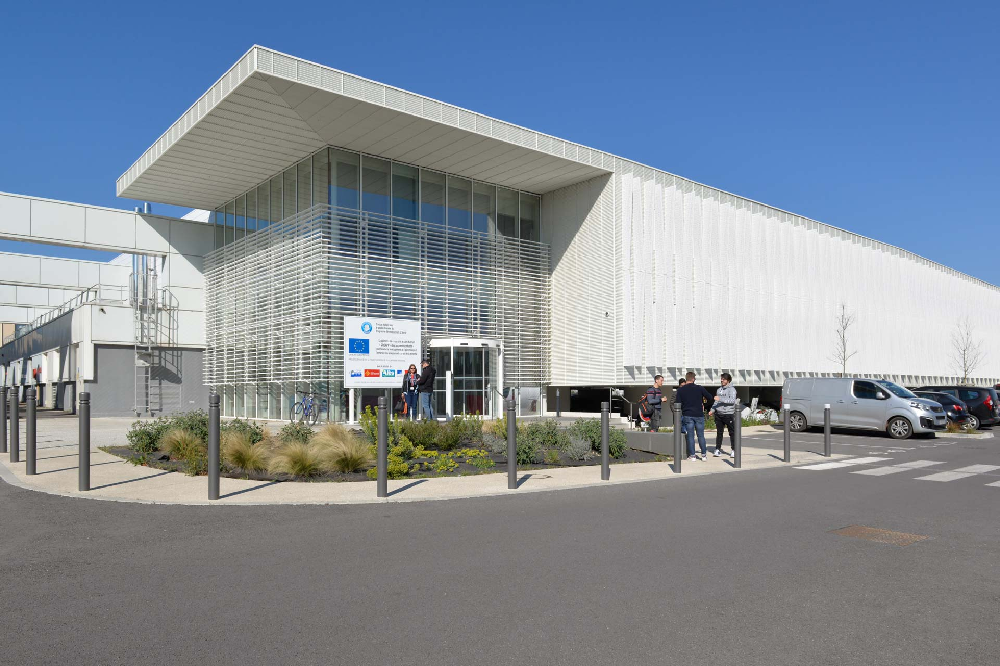
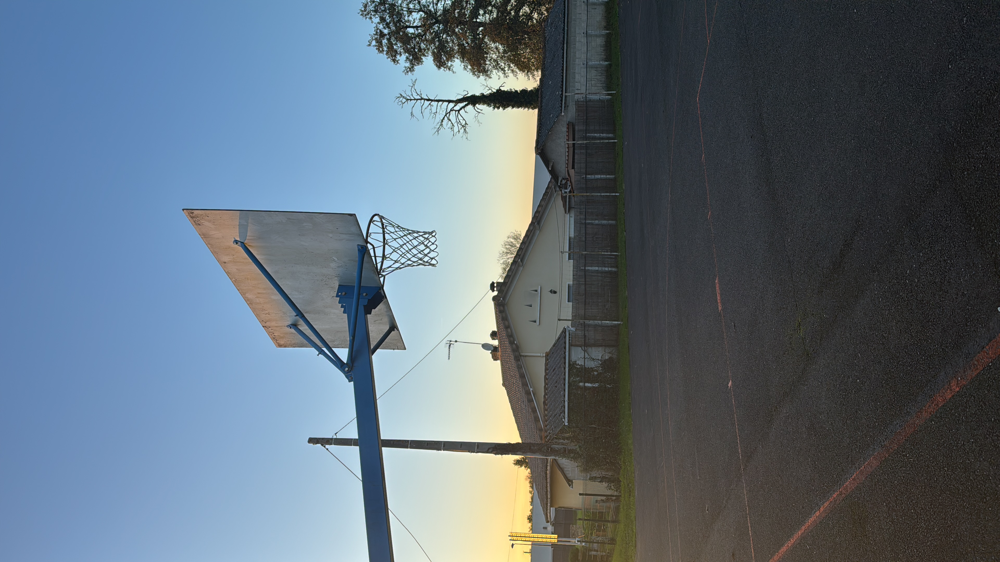
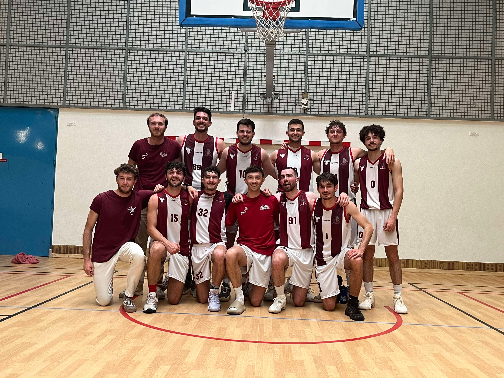
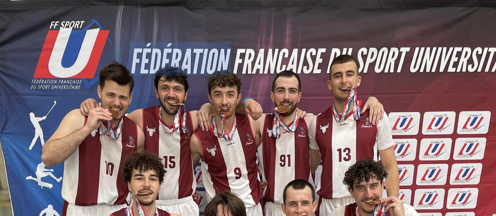
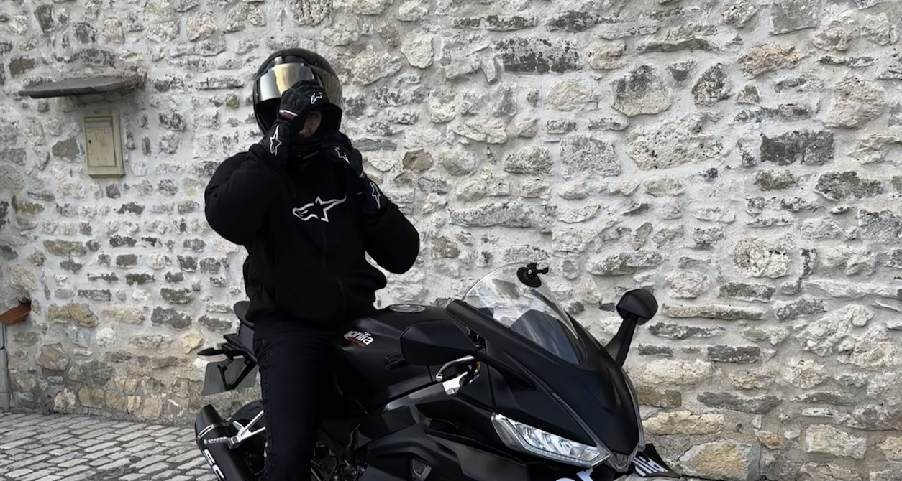
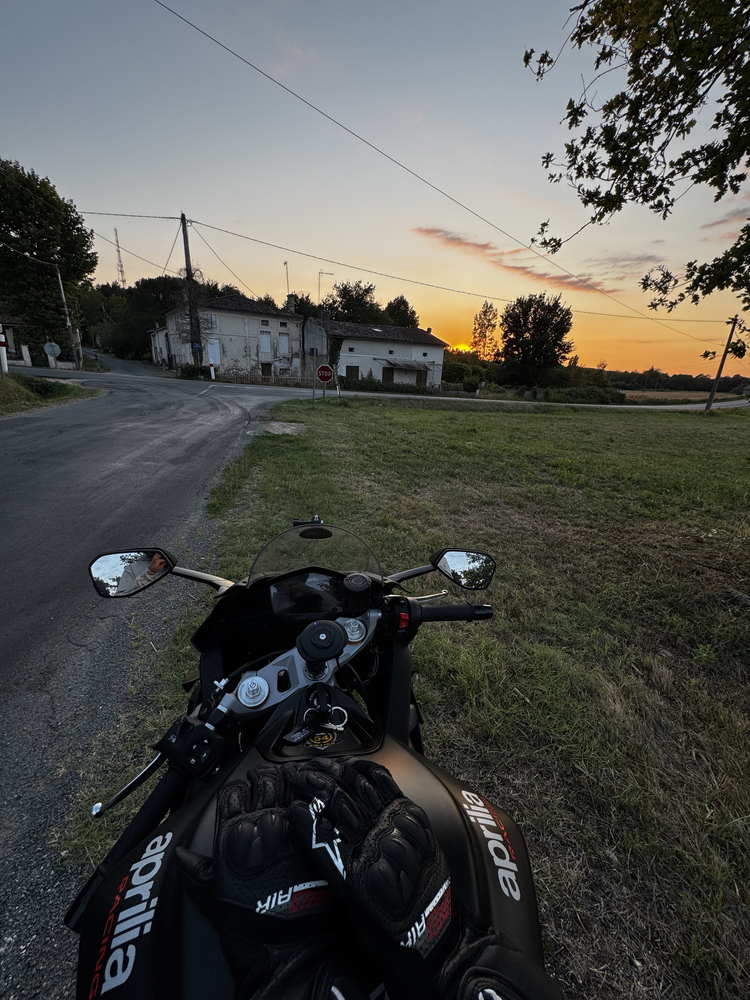

Je suis Bilal, futur ingénieur passionné par l’exploration spatiale et l’intelligence artificielle.
À travers ce portfolio, je partage mes réalisations, mes expérimentations et les enseignements tirés de mes projets.
Etant en formation d'ingénieur en intelligence artificielle et data à IMT Mines Alès, je suis sur le point de quitter le monde académique pour exploiter mes compétences en entreprise.
Voici un aperçu de mon parcours professionnel et académique.

Expériences professionnelles
Missions clés, responsabilités et résultats.
SL
CTO — SpringLane
SpringLane Juillet 2025 – présent · Paris, France - à distance
J'ai rejoint SpringLane en tant que CTO pour diriger le développement technique de leur écosystème innovant.
Mon rôle consiste à superviser l'architecture logicielle, la gestion de l'infrastructure, et à encadrer l'équipe de développement.
Conception et pilotage du développement d’un antivol basé sur les technologies RFID/NFC.
Définition de la roadmap produit (hardware + software) et coordination du MVP.
Optimisation de la BOM: réduction du coût unitaire des prototypes.
Développement du firmware et d’une application de test pour la validation.
USAM
Chef de projet — Data Science
USAM Nîmes · Janvier 2025 – Avril 2025 · Nîmes, France
Pilotage d’un projet de R&D pour l’équipe féminine de handball (Nationale 1).
Conception d’un pipeline d’analyse vidéo : détection d’événements , structuration des données et synchronisation.
Développement de modèles ML (régression logistique, XGBoost, forêts aléatoires) pour prédire les zones d’impact des tirs (zone de but subdivisée en 9 zones).
Évaluation via des métriques avancées (F1-score, Brier score, AUC) et protocoles de validation croisée.
AS
Stage R&D — Conception Mécanique de Systèmes Propulsifs
Agena Space · Août 2024 – Décembre 2024 · Talence, France
Contribution au développement de systèmes propulsifs HTP pour nanosatellites : conception et intégration.
Conception et modification de modèles 3D de composants et systèmes (SolidWorks).
Production de plans techniques détaillés et dossiers d’assemblage.
Participation à la fabrication et à l’assemblage de prototypes.
Intégration et mise en place de sous-systèmes de propulsion.
Parcours académique
Formation et spécialisations.
IMT
École d’ingénieurs — Spécialisation IA & Data
2022 – 2026 · IMT Mines Alès
Parcours Ingénieur avec double compétence systèmes mécatroniques et intelligence artificielle / data.
En effet, après avoir réjoint le
département mécatronique en 2023, j'ai rédoublé afin d'intégrer la spécialisation IA & Data en 2024.
Parmi les cours suivis :
apprentissage automatique supervisé et non supervisé
deep learning (CNN, RNN)
apprentissage par renforcement
collecte et visualisation de données
statistiques et probabilités avancées
aide à la décision
calcul et analyse numérique
J'ai également participé à plusieurs associations étudiantes :
Président du Comité Oenologie (gestion d'évènements, partenariats, budget).
Membre de l'équipe de basketball "Les Gorilles"
Responsable bourse pour l'association de solidarité internationale Tsiky Zanaka
CPGE
Classes préparatoires scientifiques PCSI - PSI
2019 – 2022 · Lycée Gustave Eiffel, Bordeaux
Formation intensive en mathématiques, physique et informatique, préparant aux concours des grandes écoles d’ingénieurs.
SI
Baccalauréat scientifique — Sciences de l’ingénieur
2018 – 2019 · Lycée Albert Claveille, Périgueux
Approche pluridisciplinaire mêlant mathématiques avancées et sciences de l’ingénieur avec réalisation de projets techniques.
Sélection de projets
Mes projets académique et personnels.
Ceci est le catalogue de mes projets en intelligence artificielle et
machine learning, réalisés dans le cadre de ma formation d'ingénieur
ou par passion.
Explorateur de projets
Filtrez par compétences ou recherchez un mot-clé pour en savoir plus.
Bibliothèque de projets
Au-delà de l’IA
Cultiver la curiosité et l’équilibre au quotidien.
Sport collectif, balades à moto, tournoi d'échecs… Ces activités nourrissent ma créativité et renforcent l’esprit d’équipe que j’apporte à mes projets.

Loisirs & passions
Ce qui me motive en dehors du clavier.
Basketball & esprit d’équipe
Club universitaire · Ailier fort
Le basketball m’apprend la stratégie, la réactivité et la communication en temps réel.
Sur le terrain, chaque décision prise en une fraction de seconde influence le collectif :
un excellent parallèle avec les projets tech.
Joueur depuis le collège, j’ai évolué en équipe universitaire et participé à plusieurs tournois (cf linkedin).
Je continue aujourd'hui cette pratique au sein de l'équipe de l'école IMT Mines Alès : les gorilles d'Alès. (cf photo)

L'équipe au "Cartel des Mines" - un tournois inter école d'ingénieurs

L’équipe au Championnats de france universitaire 2024-2025
Moto et création de contenu
Voyages et créativité
J'aime me balader à moto et filmer mes aventures. La moto combine pour moi passion, rigueur
et créativité : la conduite m'apprend à gérer la prise de risque, la concentration et la réactivité.
J'essaye d'accompagner cette pratique avec la création de contenu vidéo autour de mon expérience.
Cela me permet de développer mes compétences en montage vidéo et storytelling, utiles pour
valoriser un projet ou une idée.

Photo de moi à moto

Sortie le soir
Joueur d'échecs amateur
Reflexion, et jeux de société
La pratique des échecs nourrit ma capacité d'analyse et mon esprit stratégique.
C'est une école de patience, de logique et de résilience, où l'erreur devient une source
d'apprentissage. Ces qualités se traduisent directement dans mon approche des projets techniques,
où planification et adaptation sont clés.
Plateau de jeu en cours de partie
Entrons en contact
Contactez moi ou découvrez mes autres travaux.
Je suis ouvert aux stages, aux collaborations et aux défis concrets qu'ils soient liés au spatial ou non.
Écrivez-moi afin d'en discuter plus en détails.